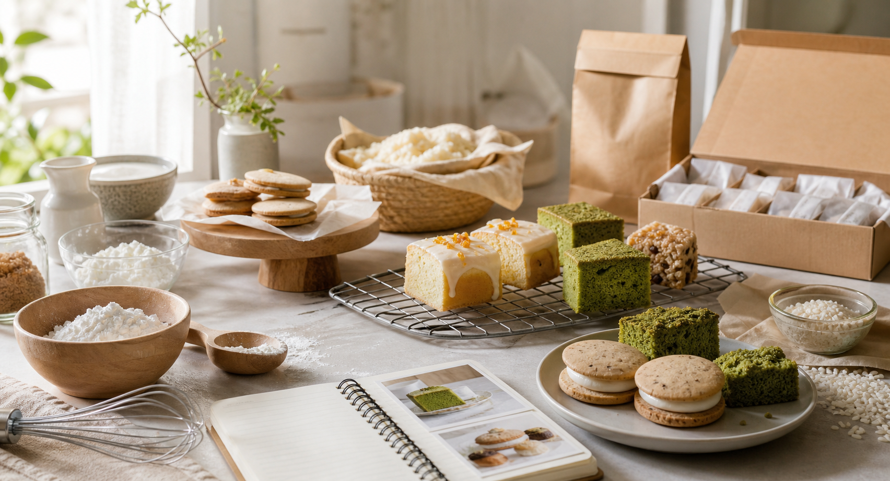

米製甜點口感研究
米蛋糕為什麼容易乾、米粉和糯米粉口感差異、無麩質新手常見失敗原因。

Gluten-Free Handmade Desserts
以米穀粉取代小麥粉，販售手作甜點，也分享品牌故事、製作觀察與家庭版甜點教學。
Fresh Updates
官網商品資料可透過更新腳本每日同步賣貨便；IG 區塊可接官方 API 顯示最新 1 篇貼文。
Shop
商品圖片、名稱、價格與規格取自 7-11 賣貨便目前上架資料。點擊商品可查看規格、成分與購買入口。
About
有米甜是無麩質手作甜點品牌，使用米穀粉製作蛋糕、餅乾、泡芙、米貝果與禮盒。品牌不只販售成品，也把研發、保存、回烤與口感判斷整理成可理解的內容。
製作時間以假日為主，完成後隔日安排出貨。訂單相關問題可以在賣貨便訂單問與答詢問，最新預購資訊會以 IG 公告為主。
Learn
有米甜研究室是官網內容的一部分，用來分享米製甜點、無麩質口感調整、家庭版做法、研發紀錄與長製程商品故事。
米蛋糕為什麼容易乾、米粉和糯米粉口感差異、無麩質新手常見失敗原因。
可公開的家庭版做法與材料提醒，保留商品版製程與比例。
記錄試作、等待、組裝、包裝與保存測試，讓客人理解手作甜點的工作量。